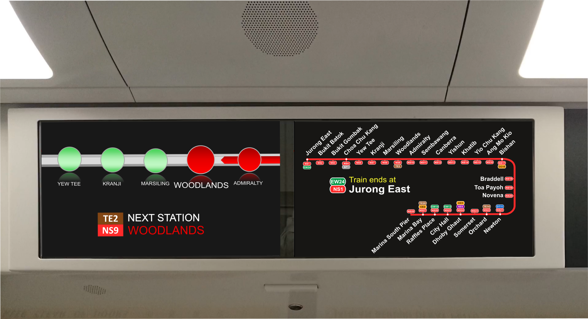
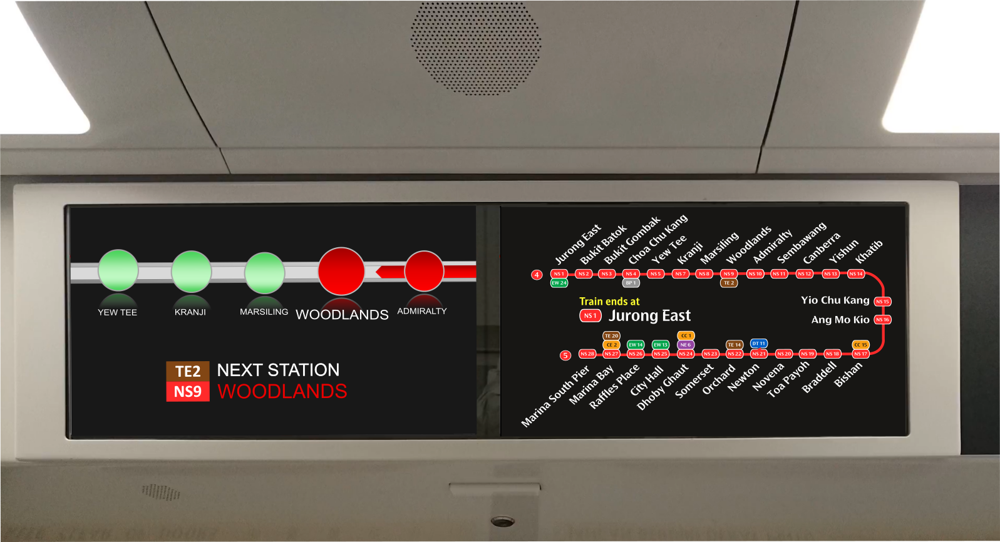
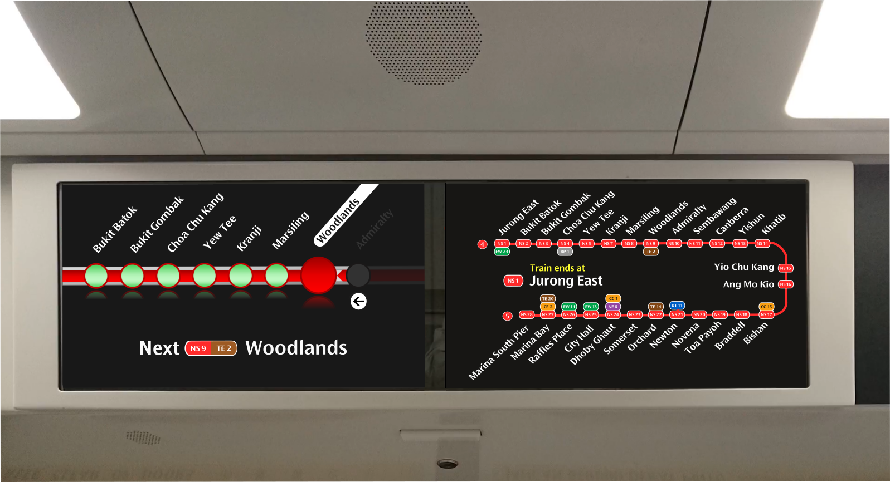
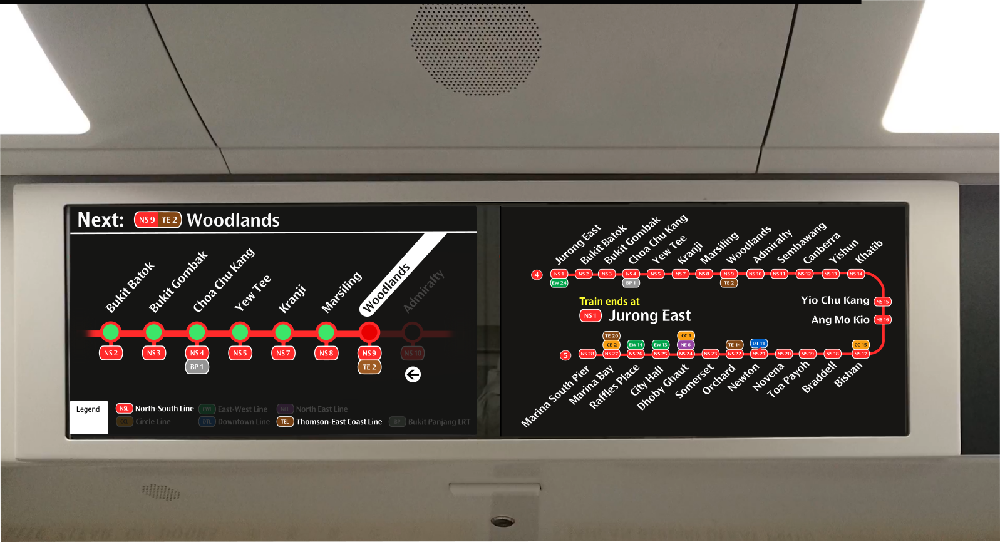
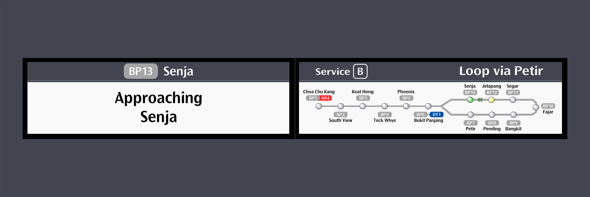

In aligning with the current Wayfinding System, I have incorporated the elements of simplicity, clarity, and consistency. The designs aim to ensure that users can easily navigate and understand the information presented, regardless of their familiarity with the system. These user interfaces are designed to be intuitive and visually appealing, enhancing the overall commuting experience.
The current Bus Card Readers are getting replaced! As such, I have come up with a design whereby the Interface match the ones used on the MRT systems, particularly the NSEWL and CCL. For those MRT lines, they too, are getting their faregates replaced. As we can see, we're progressively going for a more full-screen approach, where you will tap your card on the screen itself.
While the User Interface for the upcoming Card Readers are not yet known, these are what I envisioned the designs to be!
The new panels are an improved version with vibrant graphics and bigger fonts and provide information that allows commuters to better plan their journeys. I have redesigned it to match the current design system standards.
For the LCD screens on the TEL trains, I have redesigned it to look exactly like the other counterparts on the NSL, EWL, NEL and CCL.
For the LCD screens on the KSFB/C (C151B/C) trains, I have redesigned it to look exactly like the other counterparts on the NSL, EWL, NEL and CCL. The current UI is waaay too dated.

Current STARiS 2.0 UI, on most of the KSFB/C Trains. Older Line Diagram Layout.

Current STARiS 2.0 UI, on the KSFC Trains. Updated Line Diagram Layout.

Revamped STARiS 2.0 UI, on most of the KSFC Trains. Updated Line Diagram Layout and New Next Station Interface

Revamped STARiS 2.0 UI. Proposed Redesign
For the LCD screens on the new C801B trains, I have redesigned it to look exactly like the other counterparts on the NSL, EWL, NEL and CCL. The current UI works I guess, but it's starting to look old, and the design does not match current design standards.

Current CDD UI Design on the C801B Trains.
{kind=link}
{kind=link}
{kind=link}
{kind=link}
{kind=link}
{kind=link}
{kind=link}
{kind=link}
{kind=link}
{kind=link}
{kind=link}